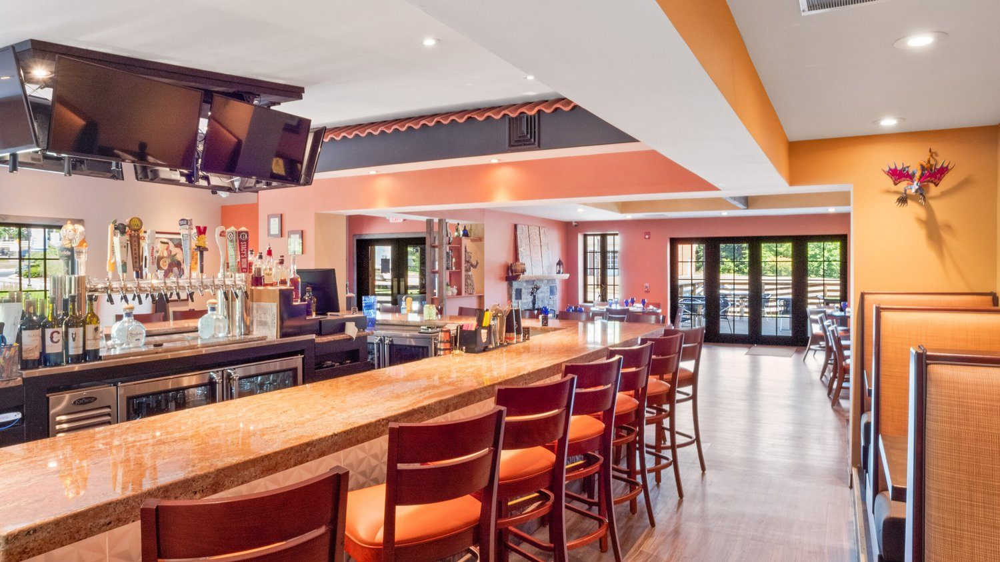

Menus
Cocktails & wine
Margaritas shaken to order with fresh lime, a mezcal list, and wine by the glass or the bottle.
Download Cocktail Menu (PDF)Handcrafted margaritas
La Loteria — premium margarita
16Agavales Tequila, Citronage orange liqueur, fresh lime juice and agave.
La Maceta — perfect margarita
14Hornitos Plata Tequila, fresh lime juice, orange liqueur and a splash of malbec.
Berry margarita
15Homemade blackberry infused tequila with a splash of agave nectar, fresh lemon juice, sugar rimmed glass.
El Sol — blood orange
14Milagro Blanco Tequila, fresh lime and orange juices, homemade muddled blood orange and a dash of agave.
La Luna — la paloma
14Tres Agaves Organic Blanco Tequila, fresh lime juice, agave, topped with Mexican grapefruit soda.
La Garza — skinny margarita
14Camerena Silver Tequila, lime juice and agave nectar.
Jalapeno-cucumber margarita
15Sauza Hornitos tequila with fresh lime juice, triple sec, fresh jalapeño-cucumber puree.
La Pinata — pinatini
14Pineapple infused tequila aged for six weeks. Served martini style, no rocks.
Espresso martini
16Fresh brewed espresso, vodka, splash of simple syrup, coffee liquor.
Mezcal cocktails
Mezcal carajillo
15Fresh brewed espresso, 43 liqueur, mezcal.
Little smokey
14Muddled lemons, agave, mint, pineapple juice, Granja Nomada mezcal, topped off with soda.
Mezcal margarita
15Classic margarita with the smokiness of Montelobos mezcal.
Nopal
14Tangy cocktail made with tamarind extract, Granja Nomada mezcal, lime juice, topped with tamarind soda.
Oaxaca old fashioned
16Classic made with Fosforo smoky mezcal, bitters, agave, mixed with flavors of orange and cherry.
SmokedCafe de la olla
16Espresso martini — fresh brewed espresso, Banhez mezcal, xocolate mole bitters, coffee liquor and a touch of chocolate.
Mocktails
Zero proof, built with the same care as everything else on this list.
Blood orange mule
14Tequila Jalisco 55, muddled oranges, agave, lime juice and non-alcoholic ginger beer.
Paloma blanca
15Lime juice, agave, pinch of salt, Tequila Jalisco 55, grapefruit soda.
Spicy pineapple tonic
14Jalapeños muddled with pineapple juice, Tequila Jalisco 55, tonic water.
Skinny
16Tequila Jalisco 55, fresh lime juice, agave.
Peach mule
16Kentucky 74 bourbon zero-proof whiskey, non-alcoholic ginger beer, peach puree.
Sangrias & mojitos
Sangria
Red or white.
Mojito
Lime, strawberry, pineapple, mango or watermelon.
Watermelon seasonal
White & rosé wine
Priced by the glass, then by the bottle.
Josh Prosecco
12Effervescent with a light creamy flavor and crisp acidity.
Chloe Pinot Grigio
14 / 54Fruit-forward flavors of juicy white peach, soft melon, crisp apple and floral honeysuckle.
Stoneleigh Sauvignon Blanc
14 / 54Bright and crisp, gooseberry, citrus and fresh tropical fruit flavors.
William Hill Chardonnay
14 / 54Stylish with a hint of oak and green apples, lengthy finish.
Diora Rosé Belle Fete
13 / 50An expressive rosé overflowing with flavor, depth and a devotion to indulgence.
Red wine
Silvergate Pinot Noir
12 / 46Bursting with notes of violet, cherry and spices that lead into an elegant, supple finish.
Boen Pinot Noir
14 / 54Bold layers of blackberry and boysenberry pie, giving way to flavors of cocoa and brown sugar.
Dona Paula Malbec
13 / 50Sweet, spicy and intense aromas with notes of fruit and herbs.
Marques de Riscal Rioja RSV
60Intense black-cherry color with gold depth, aromas of liquorice, cinnamon and black pepper.
Chateau Ste Michelle Red Blend Ltd
14 / 54Artisan blend reveals ripe flavors of raspberry and blackberry with notes of spice and vanilla.
Coppola Diamond Claret CA
14 / 54Blueberry, roasted coffee, mocha, black currants and light tobacco notes.
Francis Coppola Cab Sav Paso Robles
14 / 54Tantalizing aromas of red plums, black cherry, baking spices and a hint of chocolate on the finish.
El Jefe (grande)
14 / 54Tempranillo 100% Tinta de Toro, very bright red, currant and cranberry, fresh tannins and purity of fruit.
Drink responsibly.